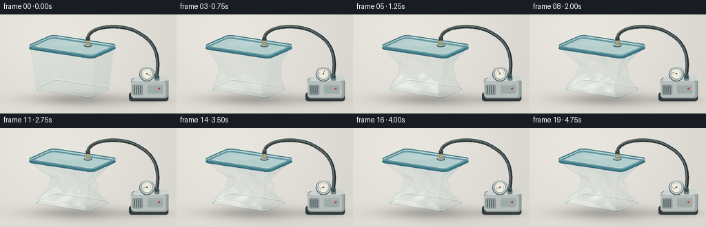
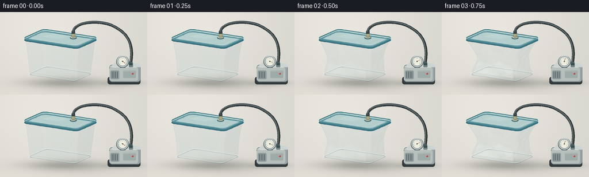

CODING AGENTS AS PIXEL WORLD MODELS
traex/GPT-6.1-Sol · mechanics_0027
点击播放 · 原生 RGB 像素
逐轮保存的候选
回放视频、检查图与代码变化。
每份候选均可单独播放。实际图片检查记录在下方工具轨迹中。
候选 01播放与检查图
点击播放 · 原生 RGB 像素


展开代码变化
--- 上一保存版本
+++ 本次保存版本
@@ -0,0 +1,299 @@
+"""Procedural timelapse: an evacuated, sealed clear plastic food container.
+All geometry, lighting, and pixels are generated locally from mathematical surfaces.
+"""
+from pathlib import Path
+import math
+import numpy as np
+from PIL import Image, ImageDraw, ImageFilter
+import artifact_io
+
+ROOT=Path(__file__).resolve().parent
+W,H,S=256,144,3
+WW,HH=W*S,H*S
+VIEW=np.array([1539.,-2622.,741.]); VIEW/=np.linalg.norm(VIEW)
+LIGHT=np.array([-2.,-3.,5.]); LIGHT/=np.linalg.norm(LIGHT)
+HALF=(VIEW+LIGHT); HALF/=np.linalg.norm(HALF)
+
+def project(p):
+ p=np.asarray(p)
+ return np.stack([105+46*p[...,0]+27*p[...,1],112+7*p[...,0]-12*p[...,1]-57*p[...,2]],axis=-1)*S
+
+def line(draw,points,fill,width=1):
+ draw.line([tuple(np.asarray(p)*S) for p in points],fill=fill,width=max(1,int(width*S)),joint='curve')
+
+def ellipse(draw,box,fill,outline=None,width=1):
+ draw.ellipse(tuple(v*S for v in box), fill=fill,outline=outline,width=max(1,int(width*S)))
+
+def rounded(draw,box,r,fill,outline=None,width=1):
+ draw.rounded_rectangle(tuple(v*S for v in box),radius=r*S,fill=fill,outline=outline,width=max(1,int(width*S)))
+
+def bezier(points,n=120):
+ p=np.asarray(points,float); t=np.linspace(0,1,n)[:,None]
+ return (1-t)**3*p[0]+3*(1-t)**2*t*p[1]+3*(1-t)*t*t*p[2]+t**3*p[3]
+
+# Rounded rectangular moulding. Constant perimeter samples give continuous normals.
+def perimeter():
+ out=[]
+ # Counterclockwise, starting at the front right rounded corner.
+ for cx,cy,start in [(0.84,-.49,-90),(.84,.49,0),(-.84,.49,90),(-.84,-.49,180)]:
+ angles=np.deg2rad(np.linspace(start,start+90,13,endpoint=True))
+ arc=np.column_stack([cx+.16*np.cos(angles),cy+.16*np.sin(angles)])
+ if out:
+ a=out[-1]; b=arc[0]
+ for f in np.linspace(0,1,15)[1:-1]: out.append(a*(1-f)+b*f)
+ out.extend(arc)
+ a=out[-1]; b=out[0]
+ for f in np.linspace(0,1,15)[1:-1]: out.append(a*(1-f)+b*f)
+ return np.asarray(out)
+RING=perimeter(); N=len(RING)
+
+def body_mesh(amount):
+ zs=np.linspace(.065,1.115,39)
+ mesh=[]
+ for z in zs:
+ h=(z-.065)/1.05
+ taper=.87+.13*h
+ q=RING*taper
+ envelope=np.sin(np.pi*h)**1.35
+ # Suction first creates a broad inward bowl, then diagonal stable buckles.
+ x=q[:,0]*(1-.42*amount*envelope)
+ y=q[:,1]*(1-.65*amount*envelope)
+ phase=np.arctan2(q[:,1]/.65,q[:,0])
+ # Near-planar walls develop broad asymmetric folds, not random jitter.
+ crease=(.053*np.sin(5*phase+8*h)+.030*np.sin(9*phase-13*h)+
+ .031*np.cos(3*phase-7*h))
+ crease*=amount**1.3*envelope
+ x+=np.sign(q[:,0])*crease*(np.abs(q[:,0])**2)
+ y+=np.sign(q[:,1])*crease*1.25
+ # Front-panel centre buckle and oblique valley.
+ front=np.exp(-((q[:,1]+.61)/.21)**2)
+ valley=np.exp(-((q[:,0]-.18-.34*(h-.5))/.29)**2)
+ y+=amount*.12*envelope*front*valley
+ # Shallow moulded foot corrugation remains recognizable throughout.
+ rib=.010*np.exp(-((h-.08)/.019)**2)+.006*np.exp(-((h-.91)/.022)**2)
+ x+=np.sign(q[:,0])*rib
+ y+=np.sign(q[:,1])*rib
+ zz=z+.025*amount*envelope*np.sin(3*phase+5*h)
+ mesh.append(np.column_stack([x,y,zz]))
+ mesh=np.asarray(mesh)
+ tang=np.roll(mesh,-1,axis=1)-np.roll(mesh,1,axis=1)
+ vert=np.gradient(mesh,axis=0)
+ normal=np.cross(tang,vert)
+ normal/=np.maximum(np.linalg.norm(normal,axis=-1,keepdims=True),1e-8)
+ return mesh,normal
+
+def plastic_color(p,n,back=False):
+ facing=np.abs(n@VIEW)
+ fres=(1-facing)**3.0
+ ndl=np.maximum(0,n@LIGHT)
+ spec=np.maximum(0,n@HALF)**45
+ # Broad photographic softboxes reflected in the plastic walls.
+ reflected=2*(n@VIEW)[...,None]*n-VIEW
+ stripe=np.exp(-((reflected[...,0]+.47)/.18)**2)*np.exp(-((reflected[...,2]-.30)/.67)**2)
+ stripe2=np.exp(-((reflected[...,0]-.67)/.08)**2)*np.exp(-((reflected[...,2]-.24)/.85)**2)
+ shine=np.clip(.60*stripe+.29*stripe2+.75*spec,0,1)
+ alpha=.055+.32*fres+.46*shine
+ # A trace of blue along the optical edges, but transparent elsewhere.
+ base=np.empty(n.shape)
+ base[:]=[145,178,181]
+ base+=ndl[...,None]*np.array([22,23,22])
+ rgb=base*(1-shine[...,None]) + np.array([252,253,248])*shine[...,None]
+ # Narrow dark reflection complements the white reflection on each crease.
+ dark=np.exp(-((reflected[...,0]-.36)/.13)**2)*(1-fres)
+ rgb-=dark[...,None]*np.array([34,32,29])
+ if back: alpha*=.61
+ return np.concatenate([np.clip(rgb,0,255),alpha[...,None]],axis=-1)
+
+def raster(vertices, triangles, attrs):
+ """Small orthographic triangle rasterizer with interpolated optical attributes."""
+ v=np.asarray(vertices).reshape(-1,3); a=np.asarray(attrs).reshape(-1,4)
+ xy=project(v); dep=v@VIEW
+ zbuf=np.full((HH,WW),-1e8,dtype=np.float32)
+ result=np.zeros((HH,WW,4),np.float32)
+ for ids in triangles:
+ pts=xy[ids]; ds=dep[ids]
+ x0=max(0,int(np.floor(pts[:,0].min()))); x1=min(WW-1,int(np.ceil(pts[:,0].max())))
+ y0=max(0,int(np.floor(pts[:,1].min()))); y1=min(HH-1,int(np.ceil(pts[:,1].max())))
+ if x1<x0 or y1<y0: continue
+ ax,ay=pts[0]; bx,by=pts[1]; cx,cy=pts[2]
+ den=(by-cy)*(ax-cx)+(cx-bx)*(ay-cy)
+ if abs(den)<1e-8: continue
+ xx=np.arange(x0,x1+1)[None,:]+.5; yy=np.arange(y0,y1+1)[:,None]+.5
+ u=((by-cy)*(xx-cx)+(cx-bx)*(yy-cy))/den
+ v0=((cy-ay)*(xx-cx)+(ax-cx)*(yy-cy))/den
+ w=1-u-v0
+ d=u*ds[0]+v0*ds[1]+w*ds[2]
+ old=zbuf[y0:y1+1,x0:x1+1]
+ mask=(u>=-1e-6)&(v0>=-1e-6)&(w>=-1e-6)&(d>old)
+ if not mask.any(): continue
+ old[mask]=d[mask]
+ col=u[...,None]*a[ids[0]]+v0[...,None]*a[ids[1]]+w[...,None]*a[ids[2]]
+ target=result[y0:y1+1,x0:x1+1]; target[mask]=col[mask]
+ return result
+
+def blend(image,layer):
+ alpha=layer[...,3:4]
+ return image*(1-alpha)+layer[...,:3]*alpha
+
+
+def mesh_tris(mesh,front=True):
+ nz,nn=mesh.shape[:2]; v=mesh.reshape(-1,3); faces=[]
+ for j in range(nz-1):
+ for k in range(nn):
+ k2=(k+1)%nn
+ ids=[j*nn+k,j*nn+k2,(j+1)*nn+k2,(j+1)*nn+k]
+ norm=np.cross(v[ids[1]]-v[ids[0]],v[ids[3]]-v[ids[0]])
+ if (norm@VIEW>0)==front:
+ faces.extend([[ids[0],ids[1],ids[2]],[ids[0],ids[2],ids[3]]])
+ return np.asarray(faces,dtype=int)
+
+
+def background():
+ yy,xx=np.mgrid[0:HH,0:WW]; xx=xx/S; yy=yy/S
+ # Seamless warm-grey studio table, fixed fine grain and soft falloff.
+ light=np.exp(-((xx-76)/160)**2-((yy-24)/125)**2)
+ c=np.stack([211+22*light,210+20*light,203+20*light],axis=-1)
+ c+=np.maximum(yy-81,0)[...,None]/63*np.array([5,4,3])
+ rng=np.random.default_rng(613)
+ c+=rng.normal(0,.35,c.shape[:2])[...,None]
+ shadow=(.20*np.exp(-((xx-108)/66)**2-((yy-123)/8.5)**2)+
+ .17*np.exp(-((xx-213)/31)**2-((yy-124)/5.2)**2)+
+ .08*np.exp(-((xx-128)/67)**2-((yy-126)/14)**2))
+ c*=1-shadow[...,None]
+ return np.clip(c,0,255).astype(np.float32)
+BG=background()
+
+def draw_pump(im,amount):
+ d=ImageDraw.Draw(im)
+ # Cast, rounded metal pump casing and its darker rubber foot.
+ rounded(d,(187,113,244,126),4,(50,58,60))
+ rounded(d,(190,92,244,122),5,(153,163,162),(100,112,114),.7)
+ d.polygon([(190*S,96*S),(200*S,89*S),(241*S,89*S),(244*S,96*S)],fill=(204,211,208))
+ rounded(d,(190,96,240,120),4,(183,191,188))
+ line(d,[(195,96),(237,96)],(226,232,226),.8)
+ # Vented end plate.
+ rounded(d,(192,102,207,117),2,(141,153,153))
+ for x in [195,198,201,204]:
+ line(d,[(x,104),(x,115)],(61,77,80),1)
+ line(d,[(x+.7,104),(x+.7,115)],(184,195,191),.35)
+ rounded(d,(214,102,236,115),1.5,(159,171,168))
+ line(d,[(215,103),(234,103)],(208,215,208),.6)
+ ellipse(d,(229,106,232,109),(199,61,46),(116,68,57),.35)
+ ellipse(d,(229.5,106.1,230.7,107.3),(255,142,106))
+ # Pressure gauge, fixed housing, continuously falling needle.
+ rounded(d,(208,90,218,97),1,(99,113,115))
+ ellipse(d,(202,76,224,97),(73,87,89))
+ ellipse(d,(203,76,223,96),(185,195,194),(224,229,221),.6)
+ ellipse(d,(205,78,221,94),(237,238,224),(117,130,129),.7)
+ cx,cy=213,86
+ for ang in np.linspace(-40,220,10):
+ rad=np.deg2rad(ang)
+ rr=6.2
+ line(d,[(cx+rr*np.cos(rad),cy-rr*np.sin(rad)),(cx+(rr-1.15)*np.cos(rad),cy-(rr-1.15)*np.sin(rad))],(72,86,86),.5)
+ angle=np.deg2rad(-35+247*amount)
+ line(d,[(cx-1.4*np.cos(angle),cy+1.4*np.sin(angle)),(cx+5.3*np.cos(angle),cy-5.3*np.sin(angle))],(167,55,41),.8)
+ ellipse(d,(212,85,214,87),(80,96,95))
+ # Gauge glass glint.
+ line(d,[(207,81),(211,79),(216,79)],(255,255,245),.7)
+ rounded(d,(224,89,231,96),1,(111,129,128))
+ line(d,[(226,89),(229,89)],(223,228,215),.8)
+ return im
+
+
+def draw_body_details(im,mesh,amount):
+ # Polished moulded foot and the stable sealed neck highlight.
+ d=ImageDraw.Draw(im,'RGBA')
+ for idx,color,ww in [(0,(88,128,133,110),.7),(1,(237,249,243,125),.75),(-1,(69,118,126,170),.75),(-2,(239,250,246,110),.6)]:
+ p=project(mesh[idx])/S
+ line(d,list(p)+[p[0]],color,ww)
+ # Front face optical creases are shaded by mesh normals, not drawn arbitrary lines.
+ return im
+
+
+def draw_lid(im,amount):
+ # Translucent rigid lid, bevel, narrow blue silicone seal.
+ d=ImageDraw.Draw(im,'RGBA')
+ ring=RING*1.025
+ lower=project(np.c_[ring,np.full(N,1.112)])/S
+ upper=project(np.c_[ring,np.full(N,1.175)])/S
+ # Draw rear edge first, then the frosted transparent flat face.
+ line(d,list(lower)+[lower[0]],(53,106,120,245),2.5)
+ d.polygon([tuple(p*S) for p in upper],fill=(132,185,191,123))
+ # Lid has a subtle inset panel, visible diagonal softbox reflection.
+ inner=RING*.87
+ inset=project(np.c_[inner,np.full(N,1.175-.008*amount)])/S
+ line(d,list(inset)+[inset[0]],(220,241,239,155),.55)
+ line(d,list(upper)+[upper[0]],(55,118,130,240),1.8)
+ # Front-facing bevel bands mask neck mesh and show airtight seam.
+ for k in range(N):
+ k2=(k+1)%N
+ outward=np.array([RING[k,0],RING[k,1],0.])
+ if outward@VIEW>0:
+ q=[lower[k],lower[k2],upper[k2],upper[k]]
+ d.polygon([tuple(p*S) for p in q],fill=(61,122,134,235))
+ line(d,[upper[k],upper[k2]],(189,224,225,245),.9)
+ line(d,[lower[k],lower[k2]],(32,83,95,190),.45)
+ # A soft rectangular white light reflected on the lid.
+ p=project(np.array([[-.62,-.20,1.18],[-.45,.31,1.18],[.17,.31,1.18],[.02,-.20,1.18]]))/S
+ d.polygon([tuple(x*S) for x in p],fill=(250,255,249,26))
+ return im
+
+
+def draw_hose(im):
+ d=ImageDraw.Draw(im,'RGBA')
+ valve=project(np.array([.34,.25,1.175]))/S
+ vx,vy=valve
+ # Brass check valve projecting through the tightly sealed lid.
+ ellipse(d,(vx-6.0,vy-1.6,vx+6.0,vy+3.0),(44,81,85,210))
+ ellipse(d,(vx-4.9,vy-2.1,vx+4.9,vy+1.8),(191,203,195,255),(77,108,110,255),.6)
+ rounded(d,(vx-2.8,vy-10.4,vx+2.8,vy-.2),1,(164,155,113,255),(90,94,77,255),.5)
+ for j in range(3):
+ line(d,[(vx-2.7,vy-7+j*2),(vx+2.7,vy-7+j*2)],(220,214,177,255),.55)
+ # Smooth rubber vacuum hose, with a long loop leading to the pump port.
+ p1=bezier([(vx,vy-8),(vx-1,15),(181,12),(203,28)])
+ p2=bezier([(203,28),(230,43),(231,68),(227,91)])
+ hose=np.concatenate([p1,p2])
+ line(d,hose,(38,47,49,255),5.2)
+ line(d,hose+np.array([-.7,-.7]),(83,95,96,255),2.6)
+ line(d,hose+np.array([-.9,-1.1]),(144,153,150,210),.65)
+ # Strain relief collars at both ends.
+ rounded(d,(vx-3.0,vy-11,vx+3.0,vy-6.6),.8,(48,65,67,255))
+ line(d,[(vx-2,vy-10),(vx+1,vy-10)],(136,155,151,255),.6)
+ rounded(d,(224.2,86.5,230.4,92.5),1,(58,79,81,255))
+ line(d,[(225,88),(230,88)],(149,170,165,255),.55)
+ return im
+
+
+def render(i):
+ t=i/19
+ # Accelerated extraction with a stable, heavily buckled final state.
+ amount=(1-np.exp(-4.4*max(0,t-.04)))/(1-np.exp(-4.4*.96))
+ amount=np.clip(amount,0,1)
+ mesh,normals=body_mesh(amount)
+ img=BG.copy()
+ back=raster(mesh,mesh_tris(mesh,False),plastic_color(mesh,normals,True))
+ img=blend(img,back)
+ # Clear thick base showing the tabletop beneath it.
+ bottom=mesh[0]
+ bv=np.vstack([bottom,np.mean(bottom,axis=0)])
+ tris=np.array([[N,k,(k+1)%N] for k in range(N)])
+ bc=np.tile([168,195,193,.085],(N+1,1))
+ img=blend(img,raster(bv,tris,bc))
+ front=raster(mesh,mesh_tris(mesh,True),plastic_color(mesh,normals,False))
+ img=blend(img,front)
+ im=Image.fromarray(np.clip(img,0,255).astype(np.uint8),'RGB')
+ im=draw_pump(im,amount)
+ im=draw_body_details(im,mesh,amount)
+ im=draw_lid(im,amount)
+ im=draw_hose(im)
+ # Supersampling provides fine molded edges and photographic antialiasing.
+ im=im.resize((W,H),Image.Resampling.LANCZOS)
+ return np.asarray(im)
+
+if __name__=='__main__':
+ frames=[]
+ for i in range(20):
+ frames.append(render(i))
+ print(f'Rendered {i+1}/20',flush=True)
+ artifact_io.save(np.stack(frames).astype(np.uint8),ROOT)
+ print('Saved 20 RGB frames and player.',flush=True)
可观测工具轨迹
实际执行的命令与返回图片。
命令 1exit 0
/bin/bash -lc 'ls -la && cat prompt.txt && cat GENERATION_RULES.md && cat task_spec.json'
命令 2exit 0
/bin/bash -lc "cat artifact_io.py && python - <<'PY' import importlib.util for x in ['numpy','PIL','scipy']: print(x, bool(importlib.util.find_spec(x))) PY"
命令 3exit 0
/bin/bash -lc "cat > generate.py <<'PY'
\"\"\"Procedural timelapse: an evacuated, sealed clear plastic food container.
All geometry, lighting, and pixels are generated locally from mathematical surfaces.
\"\"\"
from pathlib import Path
import math
import numpy as np
from PIL import Image, ImageDraw, ImageFilter
import artifact_io
ROOT=Path(__file__).resolve().parent
W,H,S=256,144,3
WW,HH=W*S,H*S
VIEW=np.array([1539.,-2622.,741.]); VIEW/=np.linalg.norm(VIEW)
LIGHT=np.array([-2.,-3.,5.]); LIGHT/=np.linalg.norm(LIGHT)
HALF=(VIEW+LIGHT); HALF/=np.linalg.norm(HALF)
def project(p):
p=np.asarray(p)
return np.stack([105+46*p[...,0]+27*p[...,1],112+7*p[...,0]-12*p[...,1]-57*p[...,2]],axis=-1)*S
def line(draw,points,fill,width=1):
draw.line([tuple(np.asarray(p)*S) for p in points],fill=fill,width=max(1,int(width*S)),joint='curve')
def ellipse(draw,box,fill,outline=None,width=1):
draw.ellipse(tuple(v*S for v in box), fill=fill,outline=outline,width=max(1,int(width*S)))
def rounded(draw,box,r,fill,outline=None,width=1):
draw.rounded_rectangle(tuple(v*S for v in box),radius=r*S,fill=fill,outline=outline,width=max(1,int(width*S)))
def bezier(points,n=120):
p=np.asarray(points,float); t=np.linspace(0,1,n)[:,None]
return (1-t)**3*p[0]+3*(1-t)**2*t*p[1]+3*(1-t)*t*t*p[2]+t**3*p[3]
# Rounded rectangular moulding. Constant perimeter samples give continuous normals.
def perimeter():
out=[]
# Counterclockwise, starting at the front right rounded corner.
for cx,cy,start in [(0.84,-.49,-90),(.84,.49,0),(-.84,.49,90),(-.84,-.49,180)]:
angles=np.deg2rad(np.linspace(start,start+90,13,endpoint=True))
arc=np.column_stack([cx+.16*np.cos(angles),cy+.16*np.sin(angles)])
if out:
a=out[-1]; b=arc[0]
for f in np.linspace(0,1,15)[1:-1]: out.append(a*(1-f)+b*f)
out.extend(arc)
a=out[-1]; b=out[0]
for f in np.linspace(0,1,15)[1:-1]: out.append(a*(1-f)+b*f)
return np.asarray(out)
RING=perimeter(); N=len(RING)
def body_mesh(amount):
zs=np.linspace(.065,1.115,39)
mesh=[]
for z in zs:
h=(z-.065)/1.05
taper=.87+.13*h
q=RING*taper
envelope=np.sin(np.pi*h)**1.35
# Suction first creates a broad inward bowl, then diagonal stable buckles.
x=q[:,0]*(1-.42*amount*envelope)
y=q[:,1]*(1-.65*amount*envelope)
phase=np.arctan2(q[:,1]/.65,q[:,0])
# Near-planar walls develop broad asymmetric folds, not random jitter.
crease=(.053*np.sin(5*phase+8*h)+.030*np.sin(9*phase-13*h)+
.031*np.cos(3*phase-7*h))
crease*=amount**1.3*envelope
x+=np.sign(q[:,0])*crease*(np.abs(q[:,0])**2)
y+=np.sign(q[:,1])*crease*1.25
# Front-panel centre buckle and oblique valley.
front=np.exp(-((q[:,1]+.61)/.21)**2)
valley=np.exp(-((q[:,0]-.18-.34*(h-.5))/.29)**2)
y+=amount*.12*envelope*front*valley
# Shallow moulded foot corrugation remains recognizable throughout.
rib=.010*np.exp(-((h-.08)/.019)**2)+.006*np.exp(-((h-.91)/.022)**2)
x+=np.sign(q[:,0])*rib
y+=np.sign(q[:,1])*rib
zz=z+.025*amount*envelope*np.sin(3*phase+5*h)
mesh.append(np.column_stack([x,y,zz]))
mesh=np.asarray(mesh)
tang=np.roll(mesh,-1,axis=1)-np.roll(mesh,1,axis=1)
vert=np.gradient(mesh,axis=0)
normal=np.cross(tang,vert)
normal/=np.maximum(np.linalg.norm(normal,axis=-1,keepdims=True),1e-8)
return mesh,normal
def plastic_color(p,n,back=False):
facing=np.abs(n@VIEW)
fres=(1-facing)**3.0
ndl=np.maximum(0,n@LIGHT)
spec=np.maximum(0,n@HALF)**45
# Broad photographic softboxes reflected in the plastic walls.
reflected=2*(n@VIEW)[...,None]*n-VIEW
stripe=np.exp(-((reflected[...,0]+.47)/.18)**2)*np.exp(-((reflected[...,2]-.30)/.67)**2)
stripe2=np.exp(-((reflected[...,0]-.67)/.08)**2)*np.exp(-((reflected[...,2]-.24)/.85)**2)
shine=np.clip(.60*stripe+.29*stripe2+.75*spec,0,1)
alpha=.055+.32*fres+.46*shine
# A trace of blue along the optical edges, but transparent elsewhere.
base=np.empty(n.shape)
base[:]=[145,178,181]
base+=ndl[...,None]*np.array([22,23,22])
rgb=base*(1-shine[...,None]) + np.array([252,253,248])*shine[...,None]
# Narrow dark reflection complements the white reflection on each crease.
dark=np.exp(-((reflected[...,0]-.36)/.13)**2)*(1-fres)
rgb-=dark[...,None]*np.array([34,32,29])
if back: alpha*=.61
return np.concatenate([np.clip(rgb,0,255),alpha[...,None]],axis=-1)
def raster(vertices, triangles, attrs):
\"\"\"Small orthographic triangle rasterizer with interpolated optical attributes.\"\"\"
v=np.asarray(vertices).reshape(-1,3); a=np.asarray(attrs).reshape(-1,4)
xy=project(v); dep=v@VIEW
zbuf=np.full((HH,WW),-1e8,dtype=np.float32)
result=np.zeros((HH,WW,4),np.float32)
for ids in triangles:
pts=xy[ids]; ds=dep[ids]
x0=max(0,int(np.floor(pts[:,0].min()))); x1=min(WW-1,int(np.ceil(pts[:,0].max())))
y0=max(0,int(np.floor(pts[:,1].min()))); y1=min(HH-1,int(np.ceil(pts[:,1].max())))
if x1<x0 or y1<y0: continue
ax,ay=pts[0]; bx,by=pts[1]; cx,cy=pts[2]
den=(by-cy)*(ax-cx)+(cx-bx)*(ay-cy)
if abs(den)<1e-8: continue
xx=np.arange(x0,x1+1)[None,:]+.5; yy=np.arange(y0,y1+1)[:,None]+.5
u=((by-cy)*(xx-cx)+(cx-bx)*(yy-cy))/den
v0=((cy-ay)*(xx-cx)+(ax-cx)*(yy-cy))/den
w=1-u-v0
d=u*ds[0]+v0*ds[1]+w*ds[2]
old=zbuf[y0:y1+1,x0:x1+1]
mask=(u>=-1e-6)&(v0>=-1e-6)&(w>=-1e-6)&(d>old)
if not mask.any(): continue
old[mask]=d[mask]
col=u[...,None]*a[ids[0]]+v0[...,None]*a[ids[1]]+w[...,None]*a[ids[2]]
target=result[y0:y1+1,x0:x1+1]; target[mask]=col[mask]
return result
def blend(image,layer):
alpha=layer[...,3:4]
return image*(1-alpha)+layer[...,:3]*alpha
def mesh_tris(mesh,front=True):
nz,nn=mesh.shape[:2]; v=mesh.reshape(-1,3); faces=[]
for j in range(nz-1):
for k in range(nn):
k2=(k+1)%nn
ids=[j*nn+k,j*nn+k2,(j+1)*nn+k2,(j+1)*nn+k]
norm=np.cross(v[ids[1]]-v[ids[0]],v[ids[3]]-v[ids[0]])
if (norm@VIEW>0)==front:
faces.extend([[ids[0],ids[1],ids[2]],[ids[0],ids[2],ids[3]]])
return np.asarray(faces,dtype=int)
def background():
yy,xx=np.mgrid[0:HH,0:WW]; xx=xx/S; yy=yy/S
# Seamless warm-grey studio table, fixed fine grain and soft falloff.
light=np.exp(-((xx-76)/160)**2-((yy-24)/125)**2)
c=np.stack([211+22*light,210+20*light,203+20*light],axis=-1)
c+=np.maximum(yy-81,0)[...,None]/63*np.array([5,4,3])
rng=np.random.default_rng(613)
c+=rng.normal(0,.35,c.shape[:2])[...,None]
shadow=(.20*np.exp(-((xx-108)/66)**2-((yy-123)/8.5)**2)+
.17*np.exp(-((xx-213)/31)**2-((yy-124)/5.2)**2)+
.08*np.exp(-((xx-128)/67)**2-((yy-126)/14)**2))
c*=1-shadow[...,None]
return np.clip(c,0,255).astype(np.float32)
BG=background()
def draw_pump(im,amount):
d=ImageDraw.Draw(im)
# Cast, rounded metal pump casing and its darker rubber foot.
rounded(d,(187,113,244,126),4,(50,58,60))
rounded(d,(190,92,244,122),5,(153,163,162),(100,112,114),.7)
d.polygon([(190*S,96*S),(200*S,89*S),(241*S,89*S),(244*S,96*S)],fill=(204,211,208))
rounded(d,(190,96,240,120),4,(183,191,188))
line(d,[(195,96),(237,96)],(226,232,226),.8)
# Vented end plate.
rounded(d,(192,102,207,117),2,(141,153,153))
for x in [195,198,201,204]:
line(d,[(x,104),(x,115)],(61,77,80),1)
line(d,[(x+.7,104),(x+.7,115)],(184,195,191),.35)
rounded(d,(214,102,236,115),1.5,(159,171,168))
line(d,[(215,103),(234,103)],(208,215,208),.6)
ellipse(d,(229,106,232,109),(199,61,46),(116,68,57),.35)
ellipse(d,(229.5,106.1,230.7,107.3),(255,142,106))
# Pressure gauge, fixed housing, continuously falling needle.
rounded(d,(208,90,218,97),1,(99,113,115))
ellipse(d,(202,76,224,97),(73,87,89))
ellipse(d,(203,76,223,96),(185,195,194),(224,229,221),.6)
ellipse(d,(205,78,221,94),(237,238,224),(117,130,129),.7)
cx,cy=213,86
for ang in np.linspace(-40,220,10):
rad=np.deg2rad(ang)
rr=6.2
line(d,[(cx+rr*np.cos(rad),cy-rr*np.sin(rad)),(cx+(rr-1.15)*np.cos(rad),cy-(rr-1.15)*np.sin(rad))],(72,86,86),.5)
angle=np.deg2rad(-35+247*amount)
line(d,[(cx-1.4*np.cos(angle),cy+1.4*np.sin(angle)),(cx+5.3*np.cos(angle),cy-5.3*np.sin(angle))],(167,55,41),.8)
ellipse(d,(212,85,214,87),(80,96,95))
# Gauge glass glint.
line(d,[(207,81),(211,79),(216,79)],(255,255,245),.7)
rounded(d,(224,89,231,96),1,(111,129,128))
line(d,[(226,89),(229,89)],(223,228,215),.8)
return im
def draw_body_details(im,mesh,amount):
# Polished moulded foot and the stable sealed neck highlight.
d=ImageDraw.Draw(im,'RGBA')
for idx,color,ww in [(0,(88,128,133,110),.7),(1,(237,249,243,125),.75),(-1,(69,118,126,170),.75),(-2,(239,250,246,110),.6)]:
p=project(mesh[idx])/S
line(d,list(p)+[p[0]],color,ww)
# Front face optical creases are shaded by mesh normals, not drawn arbitrary lines.
return im
def draw_lid(im,amount):
# Translucent rigid lid, bevel, narrow blue silicone seal.
d=ImageDraw.Draw(im,'RGBA')
ring=RING*1.025
lower=project(np.c_[ring,np.full(N,1.112)])/S
upper=project(np.c_[ring,np.full(N,1.175)])/S
# Draw rear edge first, then the frosted transparent flat face.
line(d,list(lower)+[lower[0]],(53,106,120,245),2.5)
d.polygon([tuple(p*S) for p in upper],fill=(132,185,191,123))
# Lid has a subtle inset panel, visible diagonal softbox reflection.
inner=RING*.87
inset=project(np.c_[inner,np.full(N,1.175-.008*amount)])/S
line(d,list(inset)+[inset[0]],(220,241,239,155),.55)
line(d,list(upper)+[upper[0]],(55,118,130,240),1.8)
# Front-facing bevel bands mask neck mesh and show airtight seam.
for k in range(N):
k2=(k+1)%N
outward=np.array([RING[k,0],RING[k,1],0.])
if outward@VIEW>0:
q=[lower[k],lower[k2],upper[k2],upper[k]]
d.polygon([tuple(p*S) for p in q],fill=(61,122,134,235))
line(d,[upper[k],upper[k2]],(189,224,225,245),.9)
line(d,[lower[k],lower[k2]],(32,83,95,190),.45)
# A soft rectangular white light reflected on the lid.
p=project(np.array([[-.62,-.20,1.18],[-.45,.31,1.18],[.17,.31,1.18],[.02,-.20,1.18]]))/S
d.polygon([tuple(x*S) for x in p],fill=(250,255,249,26))
return im
def draw_hose(im):
d=ImageDraw.Draw(im,'RGBA')
valve=project(np.array([.34,.25,1.175]))/S
vx,vy=valve
# Brass check valve projecting through the tightly sealed lid.
ellipse(d,(vx-6.0,vy-1.6,vx+6.0,vy+3.0),(44,81,85,210))
ellipse(d,(vx-4.9,vy-2.1,vx+4.9,vy+1.8),(191,203,195,255),(77,108,110,255),.6)
rounded(d,(vx-2.8,vy-10.4,vx+2.8,vy-.2),1,(164,155,113,255),(90,94,77,255),.5)
for j in range(3):
line(d,[(vx-2.7,vy-7+j*2),(vx+2.7,vy-7+j*2)],(220,214,177,255),.55)
# Smooth rubber vacuum hose, with a long loop leading to the pump port.
p1=bezier([(vx,vy-8),(vx-1,15),(181,12),(203,28)])
p2=bezier([(203,28),(230,43),(231,68),(227,91)])
hose=np.concatenate([p1,p2])
line(d,hose,(38,47,49,255),5.2)
line(d,hose+np.array([-.7,-.7]),(83,95,96,255),2.6)
line(d,hose+np.array([-.9,-1.1]),(144,153,150,210),.65)
# Strain relief collars at both ends.
rounded(d,(vx-3.0,vy-11,vx+3.0,vy-6.6),.8,(48,65,67,255))
line(d,[(vx-2,vy-10),(vx+1,vy-10)],(136,155,151,255),.6)
rounded(d,(224.2,86.5,230.4,92.5),1,(58,79,81,255))
line(d,[(225,88),(230,88)],(149,170,165,255),.55)
return im
def render(i):
t=i/19
# Accelerated extraction with a stable, heavily buckled final state.
amount=(1-np.exp(-4.4*max(0,t-.04)))/(1-np.exp(-4.4*.96))
amount=np.clip(amount,0,1)
mesh,normals=body_mesh(amount)
img=BG.copy()
back=raster(mesh,mesh_tris(mesh,False),plastic_color(mesh,normals,True))
img=blend(img,back)
# Clear thick base showing the tabletop beneath it.
bottom=mesh[0]
bv=np.vstack([bottom,np.mean(bottom,axis=0)])
tris=np.array([[N,k,(k+1)%N] for k in range(N)])
bc=np.tile([168,195,193,.085],(N+1,1))
img=blend(img,raster(bv,tris,bc))
front=raster(mesh,mesh_tris(mesh,True),plastic_color(mesh,normals,False))
img=blend(img,front)
im=Image.fromarray(np.clip(img,0,255).astype(np.uint8),'RGB')
im=draw_pump(im,amount)
im=draw_body_details(im,mesh,amount)
im=draw_lid(im,amount)
im=draw_hose(im)
# Supersampling provides fine molded edges and photographic antialiasing.
im=im.resize((W,H),Image.Resampling.LANCZOS)
return np.asarray(im)
if __name__=='__main__':
frames=[]
for i in range(20):
frames.append(render(i))
print(f'Rendered {i+1}/20',flush=True)
artifact_io.save(np.stack(frames).astype(np.uint8),ROOT)
print('Saved 20 RGB frames and player.',flush=True)
PY
python generate.py"命令 4exit 1
/bin/bash -lc "python - <<'PY'
from pathlib import Path
import numpy as np
from PIL import Image
p=np.load('pixels.npz')['pixels']
f=np.stack([np.asarray(Image.open(f'frames/{i:02d}.png')) for i in range(20)])
print('Packed shape:',p.shape,'RGB shape:',f.shape,'dtype:',f.dtype)
print('First-to-last mean RGB change:',np.abs(f[-1].astype(float)-f[0]).mean())
print('Required artifacts:', all(Path(x).exists() for x in ['generate.py','pixels.npz','index.html','inspection.png','transition_check.png']))
PY
command -v ffmpeg"保存候选 1 份；完成命令 4 次；可验证图片返回 0 张。原始 API 响应与完整日志保留在本地。